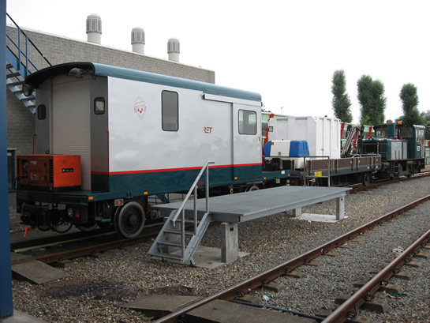

Werkmaterieel
Het metrobedrijf van de RET beschikt over eigen werk- en onderhoudsmaterieel. De voertuigen zijn met name 's nachts op het metronet om werkzaamheden aan de infrastructuur uit te voeren. Er zijn 5 locomotieven, een railslijpwagen, een aantal transportwagens en een materialenwagen.
MD 6001-6002
In 1967 werden deze twee dieselhydraulische locomotieven afgeleverd bij de remise Hilledijk voor het fungeren als trekkracht bij werktreinen, rangeerdoeleinden en het overbrengen van metrorijtuigen naar de Centrale Werkplaats Kleiweg. Oorspronkelijk waren de locomotieven okergeel van kleur en 1001-1002 genummerd. In 1995 werden de beide locomotieven wit/groen geschilderd. Locomotief 6001 fungeert tegenwoordig als trekkracht op metrolijn E en heeft als thuisbasis remise Leidschendam. Locomotief 6002 is buiten dienst gesteld en fungeert als onderdelenleverancier.

Locomotief 6002 op de remise Hilledijk.

Locomotief 6002, terzijde gesteld op het werkemplacement van de remise Waalhaven.
Technische specificaties
- Gewicht: 21 ton
- Aantal assen: 2
- Aantal aangedreven assen: 2
- Motorvermogen: 240 pk
- Maximale snelheid rangeerstand: 30 km/h
- Maximale snelheid trajectstand: 50 km/h
- Fabrikant: Gmeinder, Mosbach
MD 6101-6102
In verband met de aanleg van de metrolijn naar Hoogvliet werden nog wee dieselhydraulische locomotieven aangekocht. Uiterlijk waren ze vrijwel identiek aan de voorgangers 6001 en 6002, maar de capaciteiten van de locomotieven waren groter. Locomotief 6102 heeft geruime tijd buiten dienst gestaan op het terrein van de Centrale Werkplaats Kleiweg, maar kreeg in 2004/2005 een uitgebreide revisie. De locomotief werd groen/grijs, evenals locomotief 6101, die ook gereviseerd werd. Standplaats van de locomotieven is respectievelijk de remise Waalhaven en de remise 's-Gravenweg.

Locomotief 6101 in de kleurstelling voor de laatste uitgebreide revisie.

Kort na de revisie staat locomotief 6102 op de remise Waalhaven.
Technische specificaties
- Gewicht: 20 ton
- Aantal assen: 2
- Aantal aangedreven assen: 2
- Motorvermogen: 310 pk
- Maximale snelheid rangeerstand: 30 km/h
- Maximale snelheid trajectstand: 50 km/h
- Fabrikant: Gmeinder, Mosbach
MD 6201
In maart 2000 werd door Schalke een vierassige hybride locomotief geleverd. De locomotief werd aangekocht in verband met de aanleg van de Beneluxlijn en andere doeleinden. In eerste instantie werd de locomotief uitgerust met een op afstand bedienbare kraan, deze werd echter overgezet op railtransportwagen 7006 in maart 2007. De vaste standplaats van de locomotief is de remise Waalhaven.

De eerste rijtuigen van de 5400-serie komen binnen en worden getrokken door locomotief 6201.
Technische specificaties
- Gewicht: 42 ton
- Aantal assen: 4
- Aantal aangedreven assen: 4
- Motorvermogen: 315 kW
- Fabrikant: Schalke, Gelsenkirchen
- Extra: de locomotief is uitgerust met een ATB-installatie
HM 7101- "Pipowagen"
HM 7101 is sinds 1973 de materiaalwagen van het metrobedrijf en tevens de meest gebruikte werkwagen. De bijnaam is Pipowagen, omdat de wagen iets wegheeft van de circuswagen van Pipo de Clown. Deze bijnaam wordt ondersteund door een afbeelding van een clown op de zijkant. Van oorsprong was de werkwagen okergeel. In 2006 kreeg de werkwagen een grote revisie in de Centrale Werkplaats Kleiweg en de wit/groene kleuren maakten toen plaats voor de groen/grijze variant.
Deze werkwagen is een rijdende werkplaats met een eigen hydraulische kraan. De Pipowagen wordt voornamelijk gebruikt door de afdeling Onderhoud Infra, die hiermee wisselstellers en de infrastructuur van spoorbeveiliging vervangt. De Pipowagen wordt vrijwel elke doordeweekse nacht ingezet tussen einde dienst en aanvang dienst.

De pas gereviseerde materialenwagen 7101 met daarachter platte wagen 7014 (tijdelijke vervanging gedurende de afwezigheid van materialenwagen 7101) en locomotief 6102.
Het interieur van de "Pipowagen".
HS 7201
In 1968 werd een railslijpwagen aangekocht bij Schörling (Hannover). Tussen de twee assen van het bijzonder vormgegeven voertuigen waren drie slijpstenen aangebracht met daarboven een watertank. Bij het personeel was het voertuig beter bekend als "de Botervloot" vanwege de vorm. In 2006 kreeg de railslijpwagen een grote revisie, hoewel de vorm van het voertuig al eerder aangepast werd. De okergele kleur maakte plaats voor donkergrijs. De standplaats van de railslijpwagen het werkemplacement van de remise 's-Gravenweg, spoor 371.

Kort na revisie wordt railslijpwagen 7201 afgeleverd op het werkemplacement van de remise Waalhaven.

Kleurstelling en bouw voor de laatste grote revisie.

Originele vorm en kleurstelling.
HB 7301-7304
De Nederlandse Constructie Maatschappij (Delft) leverde eind 1972 vier tweeassige ballastwagens, bestemd voor de aanleg van de metrobaan naar Hoogvliet. De wagens zijn twee-aan-twee gekoppeld. Van oorsprong werden de ballastwagens in de okergele kleurstlling afgleverd, maar na een revisie in 2005 werden ze donkergrijs. De standplaats van de ballastwagens is afhankelijk van werkzaamheden verschillend ('s-Gravenweg, Waalhaven of Leidschendam).

Na een uitgebreide revisie verlaat een ballastwagen per vrachtwagen de Centrale Werkplaats.

Origineel ontwerp van de ballastwagens.
HV 7001 (later HH 7001) en HV 7003 (later HK 7003)
In 1968 en 1972 werden respectievelijk de vuilcontainerwagens HV 7001 en HV 7003 door de RET gebouwd. HV 7001 wordt met vier assen opgeleverd, HV 7003 met twee assen. In 1982 wordt HV 7001 omgebouwd tot hefplatformwagen en wordt vanaf dan HH 7001. De werkwagen wordt ingezet bij de aanleg van bovenleiding op het sneltramtracé tussen Capelsebrug en Ommoord, dat op dat moment in aanbouw is. Tevens wordt in 1982 vuilcontainerwagen HV 7003 omgebouwd tot kraanwagen HK 7003. HH 7001 is terzijde gesteld en staat op spoor 372 van het werkemplacement van de remise 's-Gravenweg. HK 7003 is eveneens terzijde gesteld en staat op het werkemplacement van de remise Waalhaven.

Vuilcontainerwagen 7001 op het werkemplacement van de remise Waalhaven.

HV 7001 na ombouw als HH 7001 voor de aanleg van bovenleiding op het sneltramtracé.

Inmiddels is werkwagen HH 7001 terzijde gesteld.
HT 7002, HR 7005-7007, HR 7011-7016
Werkwagen HT 7002 werd vanaf 1968 ingezet als platte transportwagen, maar werd in 1982 verbouwd tot zogenaamde haspelwagen en ingezet bij de aanleg van het sneltramtracé in de Alexanderpolder. De railtransportwagens HR 7011-7014 werden in 1972 aangekocht voor de aanleg van de metrobaan naar Hoogvliet, waarna in 1985 de HR 7015-7016 volgden. In 1999 leverde Schalke de tweeassige railtransportwagens HR 7005-7007. De werkwagens in de serie HR 7011-7014 kregen een uitgebreide revisie in de Centrale Werkplaats Kleiweg in 2004.